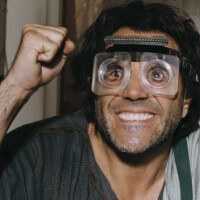

Weby a aplikace
Moderní weby, portfolia a webové aplikace na míru — od vizitky po systém s databází.
Opravím, nastavím, naprogramuji.
Systémy a technologie, se kterými pracuji
01 — Služby
Pro jednotlivce, rodiny i malé firmy v Mostě a okolí.
Moderní weby, portfolia a webové aplikace na míru — od vizitky po systém s databází.
Zrychlení, vyčištění, přeinstalace systému a řešení chyb, které tě zdržují.
Nastavení routeru, lepší pokrytí signálem a připojení tiskáren i dalších zařízení.
Pravidelné zálohy fotek a dokumentů, ochrana před viry a bezpečná hesla.
Nastavení nového telefonu, přenos dat, e-mail, aplikace a chytrá zařízení.
Pomůžu vybrat novou techniku a vysvětlím věci tak, aby jim rozuměl každý.
02 — Projekty
Weby a aplikace, na kterých jsem pracoval.

03 — O mně
Technika mě baví a rád ji dávám do pořádku. Programuji weby a aplikace, ale stejně rád pomůžu se zpomaleným notebookem, nefunkční Wi-Fi nebo nastavením nového telefonu.
Záleží mi na tom, aby věci fungovaly spolehlivě a abys rozuměl, co jsem udělal a proč. Žádné zbytečné odborné řeči — jen řešení, které ti ušetří čas i nervy.
04 — Oblast působnosti
Za počítači, Wi-Fi a telefony přijedu osobně domů nebo do firmy. Weby a aplikace dělám pro kohokoli v Česku.
Most a obce v okolí. Když nevidíš svoje město, napiš — domluvíme se.
Web nebo aplikaci ti udělám, ať jsi kdekoli. Domluvíme se po e-mailu nebo na videohovoru a průběžně uvidíš, jak práce postupuje.
05 — Kontakt
Napiš mi, s čím potřebuješ poradit, a domluvíme se, jak na to.
Psst… v jsem t0bi je tam nula ne písmeno o 😉